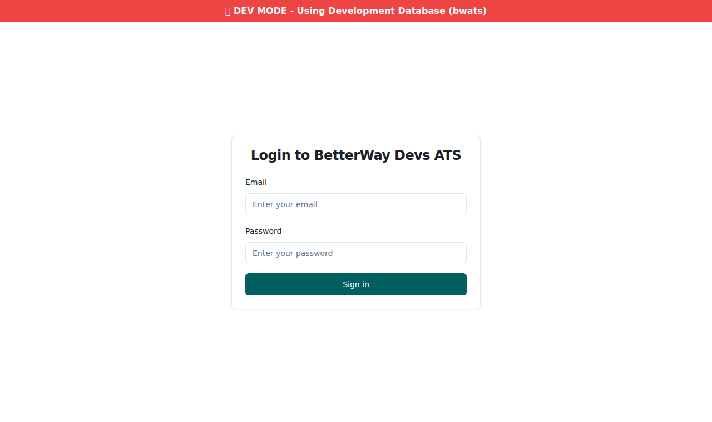
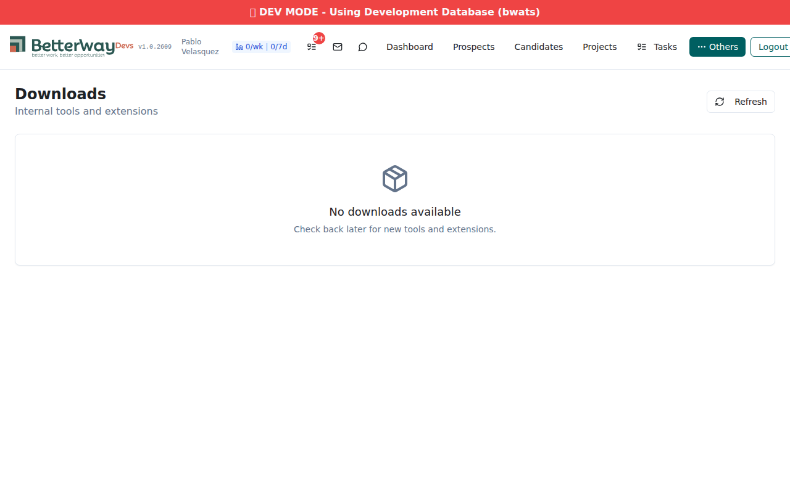
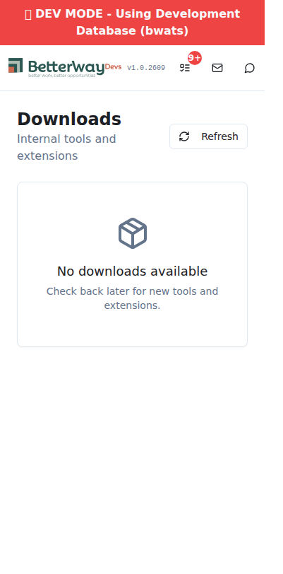
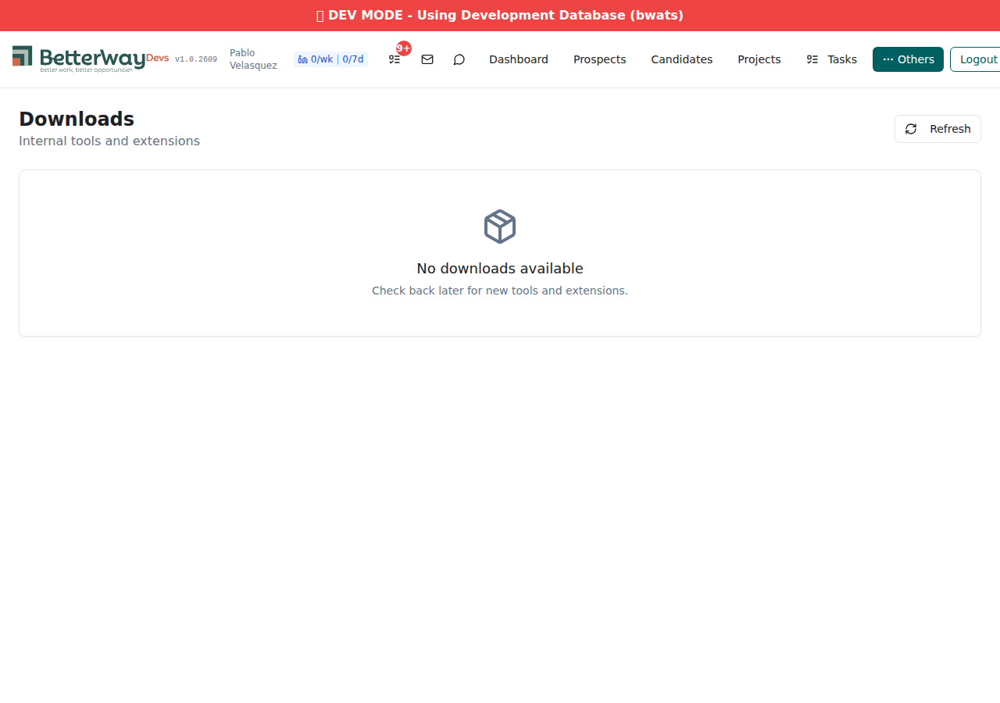

7 PASS, 1 FAIL, 4 BLOCKED (upload/download/frontend-with-data)
The frontend Downloads page is correctly implemented and passes all UI tests (auth guard, page structure, navigation, responsive layout, empty state). The backend API endpoints exist on the dev branch but have empty function stacks - they return HTTP 200 with a null body instead of querying the database. This prevents testing: file upload, tool list with data, file download, and frontend tool card rendering.
xanoscript: null. The v1 branch has working function stacks, but the development auth token cannot be used against v1 endpoints.
Auth token obtained at 2026-03-04 10:51:49 UTC. Token length: 424 characters.
3 records inserted into downloadable_tools table (ID 204) on the development data source using Xano MCP addTableContent with X-Data-Source: development header.
| ID | Name | Slug | Type | Version | Platform |
|---|---|---|---|---|---|
| 1 | Linked Communication | linked-communication | extension | 1.2.3.0 | Chrome |
| 2 | Cold Recruiting | cold-recruiting | extension | 1.0.0 | Chrome |
| 3 | /ats CLI Skill | ats-cli-skill | skill | 0.1.0 | Claude Code |
3 test zip files created using Python zipfile module:
| File | Size | Contents |
|---|---|---|
| linked-communication.zip | 232 bytes | manifest.json (MV3, v1.2.3.0) |
| cold-recruiting.zip | 217 bytes | manifest.json (MV3, v1.0.0) |
| ats-cli-skill.zip | 175 bytes | skill.md (v0.1.0) |
All 3 uploads return null. The API endpoint exists (HTTP 200) but the function stack is empty on the dev branch - the upload logic that looks up the record by slug and stores the file was never merged from v1.
Returns null despite 3 records existing in the dev database. Confirmed via MCP listAPIs: API 44940 (tools/list) on dev branch has "xanoscript": null.
Cannot test download - requires upload to have worked first (to set download_url on records). Also, the download API function stack is empty on dev.
| Test | Result | Details | Time |
|---|---|---|---|
| T1: Auth guard redirect | PASS | /downloads redirects to /login for unauthenticated users | 11:30:42 |
| T2: Login | PASS | Login form works, redirects to /dashboard | 11:30:50 |
| T3: Downloads page loads | PASS | Title "Downloads", subtitle "Internal tools and extensions", Refresh button, empty state | 11:31:00 |
| T4: Empty state display | PASS | "No downloads available. Check back later for new tools and extensions." | 11:31:00 |
| T5: Others dropdown | PASS | Downloads link found in Others dropdown menu | 11:31:07 |
| T6: Mobile (375px) | PASS | Single-column responsive layout at mobile width | 11:31:12 |
| T7: Desktop (1920px) | PASS | Full-width layout at desktop resolution | 11:31:17 |
| T8: API list response | FAIL | HTTP 200 but body is null - function stack empty on dev | 11:31:17 |




| AC | Description | Verdict | Evidence |
|---|---|---|---|
| AC5 | /downloads page displays tool grid with download buttons | PASS (partial) | Page loads with correct structure. Empty state renders correctly. Tool card grid cannot be verified because API returns null (no data to display). Page structure, navigation, and responsive layout all verified. |
| AC6 | Clicking "Download" triggers file download | BLOCKED | No tool cards rendered (API returns null). Cannot test download button click. Code reviewed: uses standard window.open(url, '_blank') pattern. |
| AC8 | Manual QA checklist complete | PASS (6/7) | Auth redirect PASS, page loads PASS, empty state PASS, nav item PASS, mobile PASS, desktop PASS. Download click NOT TESTABLE (no data). |
Evidence:
listAPIs for group 3613 on dev shows APIs 44939-44941 with "xanoscript": nullupdateAPI is intermittently broken ("Unable to get successful response")createAPI creates shells but ignores the xanoscript parameterPablo must manually copy the function stacks from v1 to dev branch for these 3 APIs in the Xano UI:
After fixing, re-run this test to verify upload, list, download, and frontend tool card rendering.